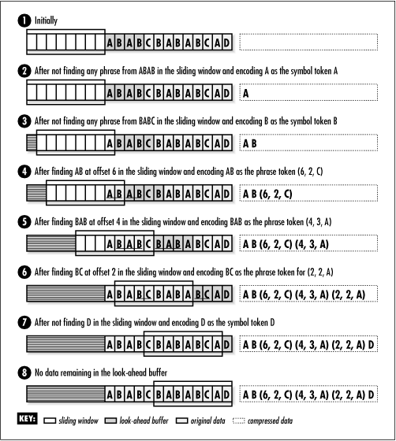
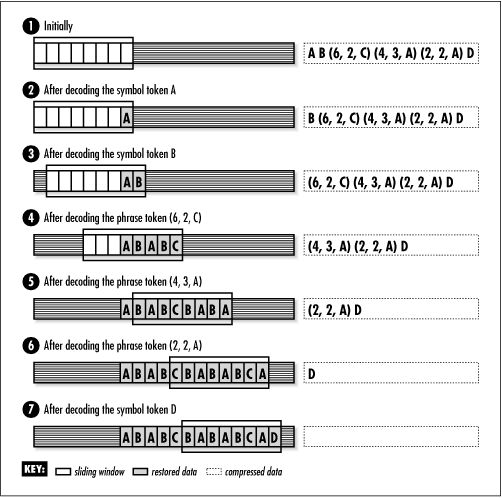

14.8 Description of LZ77
LZ77 ( Lempel-Ziv-1977) is a simple but
surprisingly effective form of data compression that takes an
entirely different approach from Huffman coding. LZ77 is a
dictionary-based method, which means that it tries to compress
data by encoding long strings of symbols, called phrases, as small tokens that reference entries in a
dictionary. Compression is achieved by using relatively small
tokens in place of longer phrases that appear several times in
the data. As with Huffman coding, it is important to realize
that a symbol is not necessarily a character of text: a symbol
can be any amount of data we choose, but it is often one
byte's worth.
14.8.1 Maintaining a Dictionary of
Phrases
Different
dictionary-based compression methods use various approaches
for maintaining their dictionaries. LZ77 uses a look-ahead buffer and a sliding
window. LZ77 works by first
loading a portion of the data into the look-ahead buffer. To
understand how the look-ahead buffer stores phrases that
effectively form a dictionary, picture the buffer as a
sequence of symbols s1, . . . , sn, and Pb as a set of phrases constructed
from the symbols. From the sequence s1, . . . , sn, we form n phrases, defined as:
Pb =
{(s1), (s1, s2), . . .
,(s1, . . . ,sn)}
This means that if the look-ahead buffer
contains the symbols (A, B, D), for example, the phrases in
the buffer are {(A), (A, B), (A, B, D)}. Once data passes
through the look-ahead buffer, it moves into the sliding
window and becomes part of the dictionary. To understand how
phrases are represented in the sliding window, consider the
window to be a sequence of symbols s1, . . ., sm, and Pw to be a set of phrases constructed
from these symbols. From the sequence s1, . . ., sm, we form the set of phrases as
follows:
Pw =
{p1, p2, . . . , pm},
where pi =
{(si), (si, si+1), . . . ,
si, si+1, . . . ,
sm)}
Thus, if the sliding window contains the
symbols (A, B, C), the phrases in the window, and hence the
dictionary, are {(A), (A, B), (A, B, C), (B), (B, C), (C)}.
The main idea behind LZ77 is to look continually for the
longest phrase in the look-ahead buffer that matches a phrase
currently in the dictionary. In the look-ahead buffer and
sliding window just described, the longest match is the
two-symbol phrase (A, B).
14.8.2 Compressing and
Uncompressing Data
As we
compress the data, two situations can exist between the
look-ahead buffer and the sliding window at any given moment:
there can either be a phrase of some length that matches, or
there may be no match at all. When there is at least one
match, we encode the longest match as a phrase token. Phrase tokens contain three pieces of
information: the offset in the sliding window where the match
begins, the number of symbols in the match, and the first
symbol in the look-ahead buffer after the match. When there is
no match, we encode the unmatched symbol as a symbol token. Symbol tokens simply contain the
unmatched symbol itself, so no compression is accomplished. In
fact, we will see that symbol tokens actually contain one bit
more than the symbol itself, so a slight expansion occurs.
Once the appropriate token has been generated
that encodes some number of symbols n, we shift n symbols out one end of the sliding
window and replace them at the other end by the same number of
symbols shifted out of the look-ahead buffer. Next, we refill
the look-ahead buffer. This process keeps the sliding window
up to date with only the most recent phrases. The exact number
of phrases maintained by the sliding window and look-ahead
buffer depends on their size.
Figure
14.2 illustrates the compression of a string using LZ77
with a sliding window of 8 bytes and a look-ahead buffer of 4
bytes. In practice, typical sizes for sliding windows are
around 4K (4096 bytes). Look-ahead buffers are generally less
than 100 bytes.

We uncompress data
by decoding tokens and keeping the sliding window updated in a
manner analogous to the compression process. As we decode each
token, we copy the symbols that the token encodes into the
sliding window. Whenever we encounter a phrase token, we
consult the appropriate offset in the sliding window and look
up the phrase of the specified length that we find there.
Whenever we encounter a symbol token, we generate the single
symbol stored in the token itself. Figure
14.3 illustrates uncompressing the data compressed in Figure
14.2.

14.8.3 Effectiveness of LZ77
The amount of
compression achieved using LZ77 depends on a number of
factors, such as the size chosen for the sliding window, the
size set for the look-ahead buffer, and the entropy of the
data itself. Ultimately, the amount of compression depends on
the number of phrases we are able to match and their lengths.
In most cases, LZ77 results in better compression ratios than
Huffman coding, but compression times are considerably
slower.
Compressing data with LZ77 is time-consuming
because we spend a lot of time searching the sliding window
for matching phrases. However, in general, uncompressing data
with LZ77 is even faster than ucompressing data with Huffman
coding. Uncompressing data with LZ77 is fast because each
token tells us exactly where to read symbols out of the
buffer. In fact, we end up reading from the sliding window
only as many symbols as in the original data. |